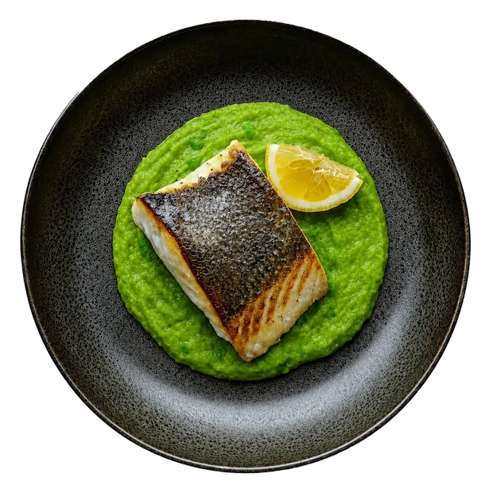

01
Brand direction che alza la percezione.
Posizionamento, identità e tono trasformano il menu da semplice supporto informativo a parte riconoscibile dell’esperienza.
Per ristoranti che vogliono distinguersi
Prima ancora di ordinare, il cliente decide quanto desidera un piatto e quanto valore gli riconosce. Se il tuo menu mostra solo un nome e un prezzo, gli stai chiedendo di immaginare ciò che dovrebbe desiderare. I locali più evoluti hanno già smesso di farlo. Tu a che punto sei?
Non è un restyling del menu. È un sistema progettato per aumentare desiderabilità, chiarezza e valore percepito.
Brand strategy, identità visiva, UX e UI, sviluppo custom, produzione 3D e WebAR.
Il problema non è la cucina
Brand e menù devono lavorare insieme per far capire il valore prima che il piatto arrivi al tavolo.
Scopri il progetto su misuraUn unico progetto, quattro leve
Niente elementi aggiunti per moda. Ogni scelta deve chiarire, aumentare il desiderio o ridurre l’attrito nella decisione.
Posizionamento, identità e tono trasformano il menu da semplice supporto informativo a parte riconoscibile dell’esperienza.
Porzioni, materia, volume e presentazione diventano leggibili prima dell’ordine. Il cliente non deve più riempire i vuoti.
Direttamente dal browser, senza app: il piatto entra nello spazio reale e diventa più semplice da comprendere e desiderare.
Se una tecnologia non chiarisce, non aumenta il desiderio e non riduce l’attrito, non entra nel progetto.
3D & WebAR nel locale
Far vedere ai tuoi clienti esattamente cosa stanno scegliendo significa ridurre l’incertezza, rendere più leggibili porzioni e presentazione e far percepire il valore prima ancora dell’ordine.
Aurum è un concept dimostrativo: il tuo progetto verrà costruito sul brand, sul pubblico e sul servizio del tuo ristorante.

Investimento
Se il tuo ristorante è unico, perché il menu dovrebbe sembrare quello degli altri? Non adattiamo il progetto a un pacchetto: definiamo ciò che serve per rendere il valore più chiaro, desiderabile e riconoscibile.
Ristoranti che vedono il menu come parte dell’esperienza, del brand e del processo di scelta.
Se serve soltanto pubblicare un PDF online, esistono soluzioni più semplici e più economiche.
Valutiamo pochi criteri, ma con attenzione: ambizione, qualità del progetto, disponibilità a distinguersi e investimento coerente.
Prima di iniziare
Sì. Un prodotto standard parte dalla piattaforma e adatta il ristorante ai suoi limiti. Noi partiamo da posizionamento, pubblico, piatti e servizio, poi costruiamo brand, interfaccia e tecnologia intorno al progetto.
No. Progettiamo esperienze WebAR accessibili direttamente dal browser tramite QR code, senza imporre installazioni al cliente.
Rende porzioni, ingredienti e presentazione più comprensibili, riduce l’incertezza e porta il valore del piatto dentro il momento della scelta. Gli obiettivi e gli indicatori da osservare vengono definiti in discovery.
Discovery, direzione, UX/UI custom, sviluppo front-end responsive, configurazione dei contenuti essenziali e lancio. Branding esteso, foto/video, 3D, AR, backend e integrazioni vengono quotati sul brief.
Dipende dall’ampiezza del sistema e dalla disponibilità dei contenuti. Dopo il brief definiamo fasi, responsabilità e una roadmap realistica prima di iniziare.
No. È pensato per realtà che vogliono differenziarsi, considerano il digitale parte dell’esperienza e sono pronte a investire in un prodotto proprietario, non in un template.
Questionario di candidatura
Prima di proporti una conversazione, vogliamo capire il ristorante, gli obiettivi e ciò che vuoi cambiare. Così non perdi tempo in una call generica e noi arriviamo preparati.
Leggiamo personalmente ogni brief. Se vediamo un allineamento reale, ti ricontattiamo con domande precise e un primo orientamento.
Raccontaci il locale, il punto di partenza e l’ambizione. Il questionario serve a capire se il progetto ha il fit giusto, senza impegno e senza call esplorative inutili.